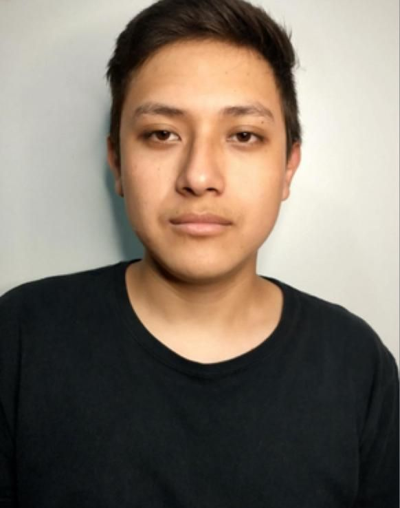

Estudiante en formación con experiencia en atención al paciente, funciones hospitalarias y preparación técnica en radiología. Comprometido con la seguridad, empatía y excelencia profesional.
Actualmente cursando el último semestre de Radiología e Imagen, con carta pasante y experiencia práctica en entorno hospitalario. Mi formación técnica y experiencia laboral me permiten desarrollar habilidades en atención al paciente, administración, liderazgo y trabajo bajo presión.
2022 - Actual | CBTIS No. 76
Último semestre | Carta Pasante | Prácticas Profesionales
2018 - 2021 | Instituto Politécnico Nacional
Auxiliar multifuncional, atención al cliente, organización e inventario.
Jefe de cafetería, liderazgo de equipo y gestión de insumos.
Ayudante de dentista, atención al paciente y tareas administrativas.